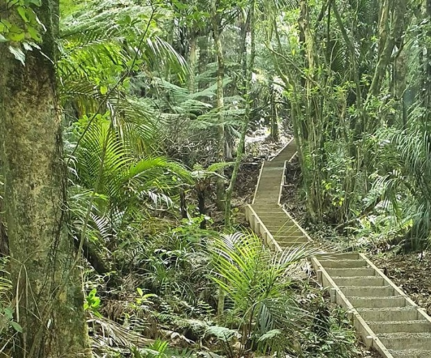
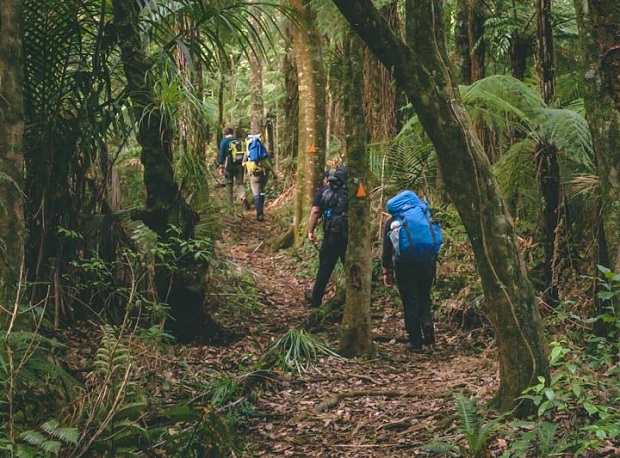
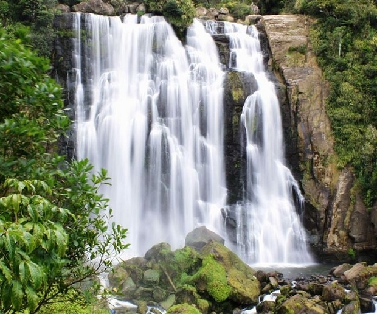

Kia ora and welcome to our About Us page!
Your virtual journey awaits you!
We are a small group of people that want to help you immerse yourself in the breath-taking beauty of New Zealand's majestic landscapes from the comfort of your own home. All of our videos are made by us in local areas within the Waikato and we hope to expand all throughout New Zealand. Our outdoors gallery brings you the beauty of this stunning country, allowing you to explore its vast terrain and experience the thrill of hiking without leaving your own home.


We understand that the New Zealand forestry and wildlife is fragile and needs to be protected. That's why we support and promote sustainable tourism practices. Through our partnerships with local conservation organizations, we contribute to the protection and conservation of the very landscapes we showcase in our virtual gallery. By appreciating and understanding the beauty of New Zealand's backyards, we hope to inspire a sense of responsibility towards its conservation for generations to come.
Best ways to contact us!

